Сумасшедшие формы
Каждый знает о веб-формах, не так ли? Вставляем элемент <form>, несколько <input type="text">, может быть <input type="password">, завершаем это всё кнопкой <input type="submit"> и готово.
Вы не знаете и половины об этом. HTML5 определяет более десятка новых типов полей, которые вы можете использовать в своих формах. И когда я говорю «использовать», я имею в виду что их можно использовать прямо сейчас — без каких-либо прокладок, хаков или обходных путей. Не волнуйтесь сильно, я не хочу сказать, что все эти новые захватывающие возможности на самом деле поддерживаются в любом браузере. Совершенно нет, я не имею в виду, что всеми. В современных браузерах, да, ваши формы покажут всё, на что они способны. Но в старых браузерах ваши формы по-прежнему будут работать, хотя и не в полной мере. То есть эти возможности элегантно деградируют в каждом браузере. Даже в IE6.
Подсказывающий текст
| IE | Firefox | Safari | Chrome | Opera | iPhone | Android |
| 10.0+ | 4.0+ | 4.0+ | 4.0+ | 11.0+ | 4.0+ | 2.1+ |
Первое улучшение HTML5 относительно форм это возможность установки подсказывающего текста в поле ввода. Такой текст отображается в поле ввода, если поле пустое и у него нет фокуса. Как только вы щёлкните в поле ввода (или перейдёте к нему через Tab) подсказывающий текст исчезает.
Вы, наверное, видели подсказывающий текст ранее. Например, Mozilla Firefox включает подсказывающий текст в адресной строке с надписью «Введите поисковый запрос или адрес».
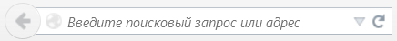
Когда вы щёлкаете по адресной строке, подсказывающий текст исчезает.
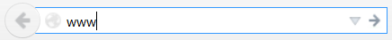
Вот как вы можете включить подсказывающий текст в свои формы.
<form>
<input name="q" placeholder="Поиск в закладках и журнале">
<input type="submit" value="Поиск">
</form>Браузеры, которые не поддерживают атрибут placeholder, его просто игнорируют. Без вреда и нарушений.
Спроси профессора Разметкина
☞В. Могу я использовать HTML разметку для атрибута placeholder? Я хочу вставить картинку или, может, изменить цвета.
О. Атрибут placeholder может содержать только текст, никакого HTML-кода. Однако есть специальные расширения CSS, которые позволяют вам установить стиль текста в некоторых браузерах.
Поля с автофокусом
| IE | Firefox | Safari | Chrome | Opera | iPhone | Android |
| 10.0+ | 4.0+ | 4.0+ | 3.0+ | 10.0+ | — | 3.0+ |
Сайты могут использовать JavaScript для автоматического получения фокуса в первом поле формы. К примеру, на главной странице Google.com автофокус есть у поля для ввода поисковых ключевых слов. Хотя это и удобно для большинства людей, но может раздражать опытных пользователей и людей с особыми потребностями. Если вы нажмёте пробел в ожидании прокрутки страницы, прокрутки не будет, потому что фокус находится в поле ввода формы (будет набираться пробел в поле вместо прокрутки). Если вы перевели фокус на другое поле ввода, пока страница загружается, скрипт автофокуса на сайте может «услужливо» переместить фокус обратно на исходное поле ввода, прерывая ваш набор и заставляя вводить текст в неверном месте.
Поскольку автофокус работает через JavaScript, могут быть сложности для обработки этих крайних вариантов и мало возможностей для тех людей, которые не хотят, чтобы веб-страница «похищала» их фокус.
Для решения этих проблема HTML5 вводит атрибут autofocus для всех элементов форм. Атрибут autofocus делает именно то, как и звучит: как только страница загружается, перемещает фокус в указанное поле. Но поскольку это всего лишь разметка, а не сценарий, поведение будет постоянным для всех сайтов. Кроме того, производители браузеров (или авторы расширений) могут предложить пользователям способ отключить автофокус.
Вот как вы можете установить поле формы с автофокусом.
<form>
<input name="q" autofocus>
<input type="submit" value="Поиск">
</form>Браузеры, которые не поддерживают атрибут autofocus, будут его игнорировать.
Что такое? Говорите, что желаете, чтобы автофокус работал везде, а не только в вычурных HTML5-браузерах? Вы можете оставить текущий скрипт с автофокусом, просто сделайте два небольших изменения:
- добавьте атрибут autofocus в код HTML;
- проверьте, поддерживает ли браузер атрибут autofocus, и если нет, запустите собственный скрипт.
Автофокус с альтернативой
<form name="f">
<input id="q" autofocus>
<script>
if (!("autofocus" in document.createElement("input"))) {
document.getElementById("q").focus();
}
</script>
<input type="submit" value="Вперёд">
</form>Устанавливайте фокус как можно раньше
Многие веб-страницы ждут, пока сработает window.onload и устанавливают фокус. Но событие window.onload не сработает, пока все изображения не загрузятся. Если на вашей странице много изображений, такие наивные скрипты потенциально изменят фокус после того, как пользователь начал взаимодействовать с другой частью вашей страницы. Вот почему опытные пользователи ненавидят скрипты автофокуса.
Например, в предыдущем разделе скрипт автофокуса размещен сразу после поля формы, на который он ссылается. Это оптимальное решение, но оно может оскорбить ваши чувства ставить блок кода JavaScript в середине страницы (или более приземлёно, ваша система может быть не настолько гибкой). Если вы не можете вставить скрипт в середине страницы, вы должны установить фокус через пользовательское событие, как $(document).ready() в jQuery вместо window.onload.
Автофокус через jQuery
<head>
<script src=jquery.min.js></script>
<script>
$(document).ready(function() {
if (!("autofocus" in document.createElement("input"))) {
$("#q").focus();
}
});
</script>
</head>
<body>
<form name="f">
<input id="q" autofocus>
<input type="submit" value="Go">
</form>Пользовательское событие jQuery срабатывает, как только DOM доступен — то есть ждёт, пока загрузится текст страницы, но не ждёт, пока все изображения загрузятся. Это не оптимальный подход — если страница необычно большая или сетевое соединение медленное, пользователь может по-прежнему взаимодействовать со страницей перед тем, как выполнится скрипт с фокусом. Но всё же это намного лучше, чем ждать, пока произойдет событие window.onload.
Если вы согласны и готовы вставить скрипт с одним оператором в код вашей страницы, это компромисс, который менее противный, чем первый вариант, и лучше чем второй. Вы можете использовать пользовательские события jQuery для задания собственных событий, скажем autofocus_ready. Тогда вы можете вызывать это событие вручную, сразу после доступности поля с автофокусом. Спасибо Е. М. Штенбергу за обучение меня этой технике.
Автофокус с альтернативным пользовательским событием
<head>
<script src=jquery.min.js></script>
<script>
$(document).bind('autofocus_ready', function() {
if (!("autofocus" in document.createElement("input"))) {
$("#q").focus();
}
});
</script>
</head>
<body>
<form name="f">
<input id="q" autofocus>
<script>$(document).trigger('autofocus_ready');</script>
<input type="submit" value="Вперед">
</form>Это решение оптимальное, как и первый подход. Фокус будет установлен в поле формы, как только это станет технически возможно, в то время как текст страницы все ещё грузится. Часть логики приложения (фокус в поле формы) перенесена из тела страницы в раздел <head>. Этот пример основан на jQuery, но концепция пользовательских событий не является уникальной для jQuery. Другие JavaScript-библиотеки вроде YUI и Dojo предлагают аналогичные возможности.
Подведём итоги.
- Правильная установка фокуса это важно.
- Если это возможно, пусть браузер использует атрибут autofocus в том поле, для которого вы хотите получить фокус.
- Если вы используете альтернативный код для старых браузеров, определяйте поддержку атрибута autofocus, чтобы скрипт выполнялся только в старых браузерах.
- Устанавливайте фокус как можно раньше. Вставьте скрипт с фокусом в код сразу же после поля формы. Если это не задевает вас, вставьте JavaScript-библиотеку, которая поддерживает пользовательские события, и вызывайте событие в коде сразу же после поля формы. Если это невозможно, используйте событие вроде $(document).ready() из jQuery.
- Ни при каких обстоятельствах не ждите, пока window.onload установит фокус.
Адреса электронной почты
Уже более десяти лет формы содержат всего несколько видов полей. Наиболее распространённые следующие.
| Тип поля | Код HTML | Замечание |
|---|---|---|
| Флажок | <input type="checkbox"> | Может быть отмечено или нет |
| Переключатель | <input type="radio"> | Группируется с другими полями |
| Пароль | <input type="password"> | Выводит точки независимо от введённого текста |
| Ниспадающий список | <select><option> | |
| Выбор файла | <input type="file"> | Выводит диалоговое окно «Открыть файл» |
| Отправка формы | <input type="submit"> | |
| Текстовое поле | <input type="text"> | Атрибут type может быть опущен |
Все эти типы полей по-прежнему работают в HTML5. Если вы «обновитесь до HTML5» (возможно сменой !DOCTYPE), вам не придётся делать ни единого изменения в ваших формах. Ура обратной совместимости!
Однако HTML5 определяет 13 новых типов полей и нет никаких причин не начать их использовать.
Первый из этих новых типов адрес электронной почты. Выглядит примерно так.
<form>
<input type="email">
<input type="submit" value="Go">
</form>Я собирался написать предложение, которое началось «в браузерах, которые не поддерживают type="email"...», но остановился. Почему? Потому что не уверен, что браузеры не поддерживают type="email". Все браузеры «поддерживают» type="email". Они могут не делать нечто специальное, но браузеры, которые не распознают type="email" будут относиться к нему как type="text" и отобразят как обычное текстовое поле.
Я подчеркну насколько это важно. В Интернете миллионы форм, которые просят ввести адрес электронной почты и все из них используют <input type="text">. Вы видите текстовое поле, вводите в него свой адрес электронной почты и на этом всё. И вот появляется HTML5, который определяет type="email". Браузеры сходят с ума? Нет. Каждый браузер на Земле воспринимает неизвестный атрибут type как type="text" — даже IE6. Так что вы можете «обновить» ваши формы используя type="email" прямо сейчас.
Что случится, если скажем, браузер поддерживает type="email"? Ну, это может означать что угодно. Спецификация HTML5 не требует какого-либо конкретного пользовательского интерфейса для новых типов полей. Опера дополняет поле формы небольшой иконкой. Другие HTML5-браузеры как Safari и Chrome отображают как текстовое поле — такое же, как type="text" — так что ваши пользователи не заметят разницу (пока не посмотрят исходный код).
И ещё есть iPhone.
У iPhone нет физической клавиатуры. Весь «набор» осуществляется нажатием по экранной клавиатуре, всплывающей в соответствующее время, например, когда вы перешли в поле формы на веб-странице. Apple сделал нечто хитрое в браузере iPhone-а. Он распознает некоторые новые поля HTML5 и динамически меняет экранную клавиатуру для оптимизации ввода.
К примеру, адрес электронной почты это текст, правильно? Конечно, но это особый вид текста. Так, практически все адреса электронной почты содержат символ @ и, по крайней мере, одну точку (.), но они вряд ли содержат пробел. Поэтому, когда вы используете iPhone и переходите к элементу <input type="email">, вы получите экранную клавиатуру, которая содержит пробел меньше обычного, а также выделенные клавиши для символов . и @.
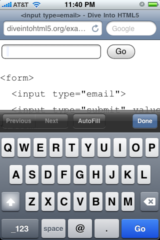
Подведу итог. Нет никаких недостатков для немедленного перевода всех ваших полей с электронными адресами в type="email". Практически никто этого не заметит, кроме пользователей iPhone, которые, вероятно, тоже этого не заметят. Но те, кто заметят, тихо улыбнутся и поблагодарят вас за то, что их работа стала немного проще.
Веб-адреса
Веб-адрес — которые зубрилы стандартов называют URL, за исключением нескольких педантов, которые называют их URI — это ещё один тип специализированного текста. Синтаксис веб-адреса ограничивается соответствующим стандартом Интернет. Если кто-то просит вас ввести веб-адрес в форму, он ожидает что-то вроде «http://www.google.com/», а не «125 Фарвуд Роуд». Косые линии являются общими — даже у главной страницы Google их три. Точки также распространены, но пробелы запрещены. И каждый веб-адрес имеет суффикс домена вроде «.com» или «.org».
И вот... (барабанная дробь, пожалуйста)... <input type="url">. На iPhone это выглядит следующим образом.
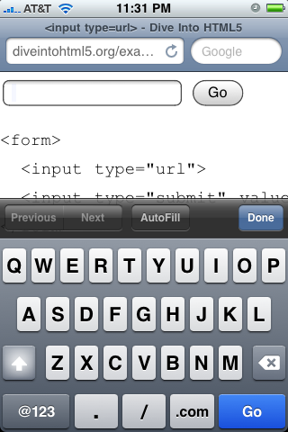
iPhone изменил свою виртуальную клавиатуру, как это сделал для адреса электронной почты, но теперь оптимизировал её для набора веб-адреса. Пробел полностью заменён тремя виртуальными клавишами: косая линия, точка и «.com» (вы можете удерживать нажатой клавишу «.com», чтобы выбрать другой суффикс вроде «.org» или «.net»).
Браузеры, которые не поддерживают HTML5, будут относиться к type="url" как к type="text", так что нет недочётов по использованию этого типа для всех полей, где нужно вводить веб-адрес.
Числа как счётчики
Следующий шаг: числа. Запрос числа более сложен, чем запрос адреса электронной почты или веб-адреса. Прежде всего, числа сложнее, чем вы думаете. Быстро выберите число. -1? Нет, я имел в виду число между 1 и 10. 7½? Нет, нет, не дробь, тупица. π? Теперь вы просто выбрали иррациональное число.
Хочу заметить, у вас не часто спрашивают «просто число». Более вероятно, что будут просить число в определённом диапазоне. Вы можете только захотеть, чтобы в пределах этого диапазона были некоторые типы чисел — может быть, целые числа, но не дроби или десятичные числа или что-то более экзотическое, например, кратные 10. HTML5 всё это охватывает.
Выбрать число, почти любое
<input type="number"
min="0"
max="10"
step="2"
value="6">Рассмотрим по одному атрибуту.
- type="number" означает, что это числовое поле.
- min="0" указывает минимально допустимое значение для этого поля.
- max="10" является максимально допустимым значением.
- step="2" в сочетании с минимальным значением определяет допустимые числа в диапазоне: 0, 2, 4 и так далее, вплоть до максимального значения.
- value="6" значение по умолчанию. Должно выглядеть знакомым, этот же атрибут всегда используется для определения значений полей формы. Я упоминаю здесь об этом для отправной точки, что HTML5 основывается на предыдущих версиях HTML. Вам не нужно переучиваться, чтобы делать то, что вы уже делали.
Это код числового поля. Имейте в виду, что все эти атрибуты являются необязательными. Если у вас задан минимум, но не максимум, можете указать атрибут min, но не max. По умолчанию значение шага равно 1 и вы можете опустить атрибут step, пока не понадобится другое значение шага. Если нет значения по умолчанию, то атрибут value может быть пустой строкой или даже вообще опущен.
Но HTML5 не останавливается на достигнутом. За ту же самую низкую, низкую цену свободы вы получаете эти удобные методы JavaScript.
- input.stepUp(n) повышает значение поля на n.
- input.stepDown(n) понижает значение поля на n.
- input.valueAsNumber возвращает текущее значение как число с плавающей точкой (свойство input.value это всегда строка).
Проблемы с отображением? Ну, правильный интерфейс по управлению числами в браузерах реализован по-разному. На iPhone, где набор имеет сложности, браузер опять оптимизирует виртуальную клавиатуру для ввода чисел.
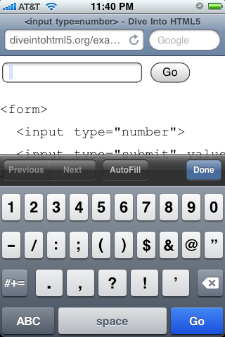
В десктопной версии Оперы поле type="number" отображается как счётчик с небольшими стрелками вверх и вниз, которые можно нажать для изменения значений.
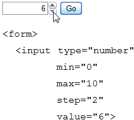
Опера уважает атрибуты min, max и step, поэтому вы всегда добьётесь приемлемого числового значения. Если вы увеличите значение до максимума, стрелка вверх в счётчике становится серой.
Как и со всеми другими полями ввода, что я обсуждал в этой главе, браузеры, которые не поддерживают type="number", будут относиться к нему как к type="text". Значение по умолчанию будет отображаться в поле (так как оно хранится в атрибуте value), но другие атрибуты, такие как min и max будут игнорироваться. Вы можете свободно реализовать их самостоятельно или использовать JavaScript-фреймворк, который уже реализует управление счетчиком. Вначале проверьте встроенную поддержку HTML5, как здесь.
if (!Modernizr.inputtypes.number) {
// нет встроенной поддержки для поля type=number
// может попробовать Dojo или другой JavaScript-фреймворк
}Числа в виде ползунка
Счётчик не единственный способ представления ввода чисел. Вы, наверное, также видели ползунок, который выглядит так.
Теперь вы также можете получить ползунок в форме. Код выглядит странно похожим на поле счётчика.
<input type="range"
min="0"
max="10"
step="2"
value="6">Все доступные атрибуты такие же, как и у type="number" — min, max, step, value — и означают то же самое. Единственное отличие состоит в пользовательском интерфейсе. Вместо поля для ввода, браузеры, как ожидается, отображают type="range" в виде ползунка. Safari, Chrome, Opera, Internet Explorer 10 и iPhone на iOS 5 работают с этим. Все остальные браузеры просто интерпретируют поле как type="text", поэтому нет никаких причин немедленно начать использовать этот тип.
Выбор даты
HTML 4 не включает выбор даты через календарь. JavaScript-фреймворки позволяют это обойти (Dojo, jQuery UI, YUI, Closure Library), но, конечно, каждое из этих решений требует «внедрения» фреймворка для любого встроенного календаря.
HTML5, наконец, определяет способ включить встроенный выбор даты без всяких скриптов. В действительности, их шесть: дата, месяц, неделя, время, дата + время и дата + время с часовым поясом.
Пока поддержка... скудна.
| Тип | IE | Firefox | Safari | Chrome | Opera | iPhone | Android |
| type="date" | — | — | 5.0+ | 20.0+ | 9.0+ | 5.0+ | — |
| type="datetime" | — | — | 5.0+ | — | 9.0+ | 5.0+ | — |
| type="datetime-local" | — | — | 5.0+ | — | 9.0+ | 5.0+ | — |
| type="month" | — | — | 5.0+ | — | 9.0+ | 5.0+ | — |
| type="week" | — | — | 5.0+ | — | 9.0+ | 5.0+ | — |
| type="time" | — | — | 5.0+ | 20.0+ | 9.0+ | 5.0+ | — |
Вот как Opera отображает <input type="date">:
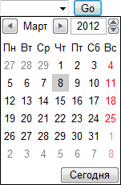
Если вам нужно время вместе с датой, Opera также поддерживает <input type="datetime">:
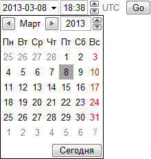
Если вам нужен месяц плюс год (например, срок действия кредитной карты), Opera может отобразить <input type="month">:
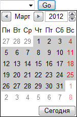
Менее распространённым, но доступным является выбор недели в году через <input type="week">:
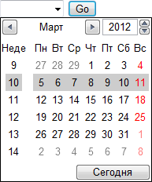
Последнее, но не менее важное, это выбор времени с <input type="time">:
Выбор даты с альтернативой
<form>
<input type="date">
</form>
...
<script>
var i = document.createElement("input");
i.setAttribute("type", "date");
if (i.type == "text") {
// Нет встроенной поддержки выбора даты :(
// Используйте Dojo/jQueryUI/YUI/Closure для её создания,
// затем динамически замените элемент <input>
}
</script>Вероятно, другие браузеры в конечном итоге будут поддерживать эти типы. Подобно type="email" и другим типам, эти поля формы будут отображаться в виде обычного текста в тех браузерах, которые не распознают type="date" и его варианты. Если вы хотите, то можете просто использовать <input type="date">, чем сделаете пользователей Opera счастливыми и подождите, пока другие браузеры наверстают упущенное. Более реально использовать <input type="date">, но проверить, имеет ли браузер встроенную поддержку выбора даты и включить альтернативное решение в виде скрипта по вашему выбору (Dojo, jQuery UI, YUI, Closure Library или другие варианты).
Окно поиска
Итак, поиск. Не только поиск от Google или Yahoo (ну, те тоже). Подумайте о любом окне поиска, на любой странице, на любом сайте. Амазон имеет окно поиска, Яндекс имеет окно поиска, большинство блогов тоже. Как они сделаны? <input type="text">, как и любое другое текстовое поле в сети. Давайте это исправим.
Поиск нового поколения
<form>
<input name="q" type="search">
<input type="submit" value="Найти">
</form>В некоторых браузерах вы не заметите никакого отличия от обычного текстового поля. Но если вы используете Safari на Mac OS X, это будет выглядеть так.
Нашли разницу? Поле ввода имеет закругленные углы! Я знаю, знаю, вы вряд ли можете сдержать свои чувства. Но подождите, это ещё не всё! Когда вы начнёте вводить в поле type="search" Safari вставит небольшую кнопку «x» с правой стороны окна. Нажатие на «x» очищает содержимое поля. Google Chrome, который имеет под капотом ту же технологию, ведёт себя так же. Обе эти маленькие хитрости выглядят и ведут себя аналогично родному поиску в iTunes и других клиентских приложениях Mac OS X.
Apple.com использует <input type="search"> для поиска по своему сайту, чтобы помочь сайту передать «маколюбное» ощущение. Но здесь нет ничего специфичного для Маков. Это просто код, так что каждый браузер на любой платформе может выбрать, как отображать в соответствии с соглашениями платформы. Как и со всеми другими новыми типами, браузеры, которые не признают type="search" будут относиться к нему как type="text", так что нет абсолютно никаких причин не начать использовать type="search" для всех ваших окон поиска прямо сегодня.
Профессор Разметкин говорит
По умолчанию Safari не применяет к <input type="search"> большинство стилей. Если вы хотите заставить Safari понимать поле для поиска как обычное текстовое поле (чтобы применить собственные стили), добавьте это правило к вашей таблице стилей.
input[type="search"] {
-webkit-appearance: textfield;
}Спасибо Джону Лейну за обучение меня этому трюку.
Выбор цвета
HTML5 также определяет поле <input type="color">, которое позволяет выбрать цвет и возвращает его в шестнадцатеричном представлении. Хорошие новости для всех! Opera 11 теперь поддерживает type=color. На Mac и Windows поле интегрируется с родным выбором цвета платформы. В Linux раскрывается базовый выбор цвета Для всех платформ возвращается шестизначное шестнадцатеричное значение цвета RGB и оно подходит везде, где допустим цвет CSS.
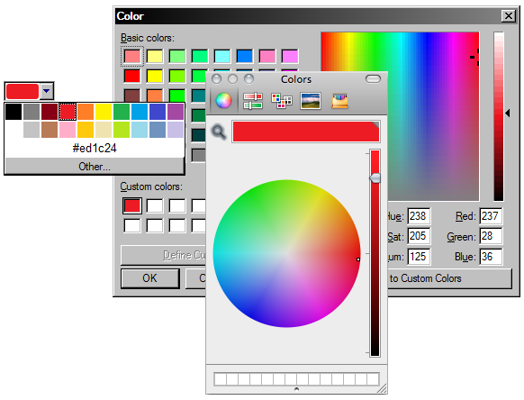
Благодарю Патрика Люка и Криса Миллса за разрешение использовать это изображение для включения в книгу. Вы должны прочитать их статью о новых возможностях форм в Opera 11.
Валидация форм
| IE | Firefox | Safari | Chrome | Opera | iPhone | Android |
| 10.0+ | 4.0+ | 5.0+ | 10.0+ | 9.0+ | — | — |
В этой главе я говорил о новых элементах форм и новых возможностях, таких как автофокус, но я не упомянул, пожалуй, самую захватывающую часть форм HTML5: автоматическую проверку входных данных. Рассмотрим общие проблемы ввода адреса электронной почты в форме. Вероятно, у вас есть проверка на стороне клиента через JavaScript, после чего идёт проверка на стороне сервера через PHP, Python или другой серверный язык. HTML5 никогда не сможет заменить проверку на стороне сервера, но он может когда-нибудь заменить проверку на стороне клиента.
Есть две большие проблемы, связанные с проверкой адреса электронной почты на JavaScript:
- Некоторое количество ваших посетителей (вероятно, около 10%) не включают JavaScript.
- Вы получите адрес неправильно.
Серьёзно, вы получите адрес неправильно. Определение того, что набор случайных символов является корректным адресом электронной почты невероятно сложно. Чем сильнее вы смотрите, тем сложнее становится. Я уже говорил, что это очень, очень сложно? Не проще ли повесить эту головную боль на ваш браузер?
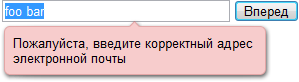
Вот скриншот из Opera 11, хотя функциональность присутствует с Opera 9. Firefox 4 и Chrome 10 содержат похожую функциональность. Код включает в себя установку значения email для атрибута type. Когда пользователь Оперы пытается отправить форму с <input type="email">, браузер автоматически проверяет адрес почты, даже если скрипты отключены.
HTML5 также предлагает проверку веб-адресов с полем <input type="url"> и чисел с <input type="number">. Проверка чисел принимает во внимание значения атрибутов min и max, поэтому браузеры не позволят вам отправить форму, если вы вводите слишком большое число.
Не существует кода, включающего проверку форм в HTML5, это делается по умолчанию. Чтобы отключить проверку, используйте атрибут novalidate.
Не проверяй меня
<form novalidate>
<input type="email" id="addr">
<input type="submit" value="Subscribe">
</form>
Обязательные поля
| IE | Firefox | Safari | Chrome | Opera | iPhone | Android |
| 10.0+ | 4.0+ | — | 10.0+ | 9.0+ | — | — |
Валидация форм в HTML5 не ограничивается типом каждого поля. Вы также можете указать, что некоторые поля обязательны для заполнения, такие поля должны иметь значение, прежде чем вы сможете отправить форму.
Код для обязательных полей прост, насколько это возможно.
<form>
<input id="q" required>
<input type="submit" value="Search">
</form>Браузеры могут изменить внешний исходный вид обязательного поля. Вот к примеру, как это выглядит в Mozilla Firefox.
Кроме того, если вы пытаетесь отправить форму без заполнения обязательного значения, Firefox выведет информационную панель, говорящую, что поле является обязательным и не может быть пустым.
Дальнейшее чтение
Спецификации и стандарты:
- типы <input>
- атрибут <input placeholder>
- атрибут <input autofocus>
- атрибут <form novalidate>
- атрибут <input required>
Библиотеки JavaScript:
Полезные статьи:
- Forward Thinking Form Validation
- New form features in Opera 11
- Mozilla Developer Center: Forms in HTML
- HTML5 Form Validation
- Internet Explorer 10 Guide for Developers: HTML5 Forms
См. также

Все материалы сайта доступны по лицензии Creative Commons «Attribution-NonCommercial» («Атрибуция — Некоммерческое использование») 4.0 Всемирная, если не указано иное.